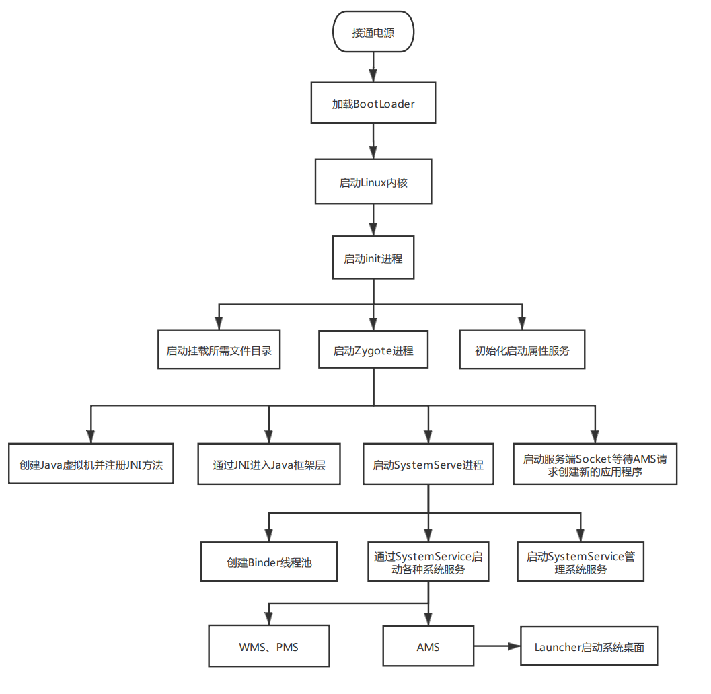

系统和应用程序启动
Android系统启动
基本概念
- init进程
- 什么是init进程：init进程是Android系统中用户空间的第一个进程，负责Android系统启动流程中的主要进程和功能的启动工作。
- init进程主要工作：启动挂载所需文件目录、初始化启动属性服务、启动Zygote进程（孵化器进程）。
- 什么是init.rc：init.rc是系统初始化配置文件，由Android初始化语言编写的脚本，配置了init进程各种操作，是init进程的入口。
- 属性服务
- 什么是属性服务：是用来记录用户和软件等信息，保证即使系统重启也能根据记录进行相应的初始化操作。
- 系统属性类型：普通属性、控制属性。控制属性用来执行一些命令，如：开关机动画等。
- 属性服务的实现：通过创建非阻塞的Socket来实现属性服务。
- Zygote进程
- 什么是Zygote进程：Zygote进程又叫孵化器，它可以通过fork（复制进程）自身的方式来创建
应用程序进程和SystemServe进程。 - Zygote进程特点：Zygote进程启动时会创建虚拟机，所以它通过fork来创建其他进程可以在内部获取虚拟机实例副本、Zygote的main方法由Java编写，开启了Java框架层。
- Zygote主要工作：创建Java虚拟机并注册JNI方法、通过JNI调用ZygoteInit.main()进入Java框架层、启动SystemServe进程、创建Serve端Socket
等待AMS请求创建新的应用程序。
- 什么是Zygote进程：Zygote进程又叫孵化器，它可以通过fork（复制进程）自身的方式来创建
- SystemServe进程
- 什么是SystemServe进程：SystemServe进程主要用于创建系统服务，如：AMS、WMS、PMS等。
- SystemServe主要工作和流程：创建
Binder线程池、创建SystemServiceManager、启动各种系统服务。 - 什么是SystemServiceManager：SystemServiceManager用于对系统服务创建、启动和生命周期管理。
流程分析
